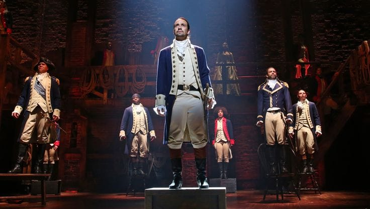

Un musical sobre la vida de Alexander Hamilton y la creación de los Estados Unidos.

Hamilton es un musical creado por Lin-Manuel Miranda, inspirado en la vida de Alexander Hamilton, uno de los padres fundadores de los Estados Unidos. La obra está basada en la biografía Alexander Hamilton, escrita por Ron Chernow.
La historia comienza con Alexander Hamilton, un joven nacido en el Caribe que llega a las Trece Colonias británicas de América del Norte. Gracias a su inteligencia, sus conocimientos y su talento para escribir, Hamilton consigue relacionarse con personas que tendrán un papel importante durante la Revolución estadounidense.
El musical se desarrolla principalmente durante el periodo de la Revolución estadounidense y los primeros años de la nueva nación. Las Trece Colonias se encuentran enfrentadas con Gran Bretaña y muchos de sus habitantes comienzan a defender la independencia.
Hamilton se une al ejército revolucionario y conoce a George Washington, quien posteriormente se convierte en una de las personas más importantes de su vida. También conoce a Aaron Burr, con quien mantiene una relación marcada por la rivalidad política y personal.
Entre los personajes que aparecen durante la historia también están Marquis de Lafayette, John Laurens, Thomas Jefferson, James Madison, Eliza Schuyler y Angelica Schuyler.
Después de la Guerra de Independencia, Hamilton participa en la construcción del nuevo gobierno estadounidense. Es nombrado primer secretario del Tesoro y trabaja en la creación de un sistema financiero nacional.
La obra también muestra los conflictos políticos de los primeros años de Estados Unidos. Hamilton y Thomas Jefferson mantienen importantes diferencias sobre la economía, el gobierno federal y el futuro político de la nueva nación.
Mientras tanto, la vida personal de Hamilton también comienza a verse afectada por sus decisiones. Su matrimonio con Eliza Schuyler, el escándalo relacionado con Maria Reynolds y la muerte de su hijo Philip tienen consecuencias importantes en la historia.
La rivalidad entre Hamilton y Aaron Burr continúa durante años. Finalmente, ambos se enfrentan en un duelo en 1804, en el que Hamilton resulta herido de muerte.
El musical termina reflexionando sobre la memoria histórica: quién cuenta la historia, qué legado deja una persona y cómo las generaciones posteriores recuerdan a quienes participaron en la creación de un país.
La obra está relacionada directamente con acontecimientos históricos de Estados Unidos. Entre ellos se encuentran la Revolución estadounidense, la Declaración de Independencia, la Guerra de Independencia, la creación del gobierno federal, los primeros debates políticos y la formación del sistema financiero de la nueva nación.
Aunque utiliza acontecimientos y personajes históricos, Hamilton es una obra teatral y utiliza recursos artísticos para contar la historia. Uno de sus elementos más característicos es la combinación de hip-hop, rap, R&B, soul y teatro musical.
El musical también utiliza un reparto racialmente diverso para interpretar a figuras históricas estadounidenses, convirtiendo una historia del siglo XVIII en una obra dirigida al público contemporáneo.
Hamilton recibió numerosos reconocimientos y se convirtió en una de las producciones teatrales más conocidas de Broadway. Su música, puesta en escena y forma de representar acontecimientos históricos tuvieron una gran influencia en el teatro musical contemporáneo.
La producción original recibió 16 nominaciones a los premios Tony y obtuvo 11 premios, incluyendo el premio a Mejor Musical. También recibió el Premio Pulitzer de Drama en 2016.
El musical ha tenido producciones y presentaciones en distintos países y territorios, entre ellos:
Además de Broadway, la obra ha contado con producciones internacionales y giras que han permitido que su historia llegue a públicos de diferentes países.
Alexander Hamilton, Aaron Burr, Eliza Schuyler, Angelica Schuyler, George Washington, Thomas Jefferson, James Madison, Marquis de Lafayette, John Laurens y el rey Jorge III.
| Dato | Información |
|---|---|
| Nombre | Hamilton |
| Creador | Lin-Manuel Miranda |
| Basado en | La vida de Alexander Hamilton |
| Biografía | Alexander Hamilton de Ron Chernow |
| Estreno | 2015 |
| Teatro original | Richard Rodgers Theatre |
| Géneros musicales | Hip-hop, rap, R&B y teatro musical |
| Tema principal | Historia y política de Estados Unidos |
Instagram de Lin-Manuel Miranda
Videos de las canciones de Hamilton
Página oficial de Hamilton